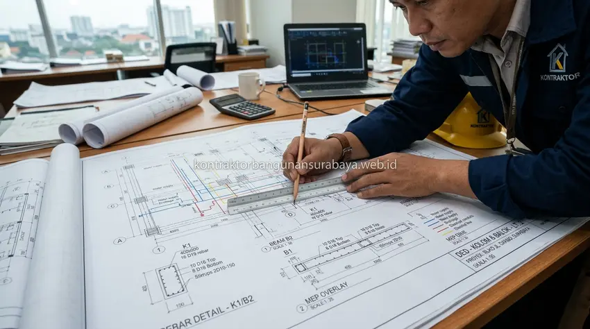

1. Cara Membaca dan Memeriksa Gambar DED Sebelum Konstruksi Dimulai
Bagaimana cara membaca dan memeriksa gambar DED sebelum konstruksi dimulai?
Membaca dan memeriksa gambar Detail Engineering Design (DED) sebelum konstruksi dimulai melibatkan pengecekan kesesuaian denah dengan kebutuhan ruang, pemeriksaan skala dan notasi teknis, serta memastikan detail struktur dan MEP sudah lengkap. kontraktorbangunansurabaya.web.id membantu pemilik proyek di Surabaya memahami poin-poin penting dalam gambar DED agar tidak ada kesalahan yang baru diketahui setelah pekerjaan fisik berjalan.
Dokumen DED merupakan cetak biru teknis yang menjadi jembatan antara konsep visual arsitek dengan eksekusi nyata tukang dan mandor di lapangan. Ketidaksesuaian antara gambar kerja dengan realitas lahan atau keinginan pemilik bangunan dapat memicu pekerjaan bongkar-pasang yang menguras biaya dan memperlambat jadwal kurva-S proyek.
Peran Krusial Dokumen DED
Gambar DED yang terverifikasi rapi menjadi dasar hukum pengawasan mandor, acuan volume kalkulasi desain arsitektur dan RAB, serta syarat utama penerbitan izin PBG di Surabaya.
2. Memeriksa Kesesuaian Denah dengan Kebutuhan Ruang Awal
Langkah pertama memeriksa DED adalah membandingkan denah akhir dengan kebutuhan ruang yang telah didiskusikan sejak awal, memastikan ukuran setiap ruangan, posisi pintu dan jendela, serta alur sirkulasi antar ruang sudah sesuai dengan yang diharapkan sebelum gambar difinalisasi.
Pemeriksaan skala gambar juga penting dilakukan, karena kesalahan skala dapat membuat persepsi ukuran ruangan menjadi keliru saat dibayangkan secara nyata, sehingga sebaiknya pemilik proyek juga membandingkan ukuran pada gambar dengan ukuran ruangan serupa yang pernah dilihat langsung sebagai pembanding.
| Elemen Denah Arsitektur | Poin Kritis Pemeriksaan DED | Risiko Jika Terlewat |
|---|---|---|
| Dimensi & Luas Ruang | Cek ukuran netto (jarak as-ke-as vs dinding-ke-dinding) | Furnitur tidak muat atau ruang terasa sempit |
| Bukaan Pintu & Jendela | Arah ayunan bukaan pintu, posisi engsel, dan ventilasi silang | Pintu menabrak saklar/dinding, sirkulasi udara pengap |
| Elevasi Peil Lantai | Perbedaan tinggi lantai utama, teras, carport, dan kamar mandi | Genangan air merembes masuk ke dalam rumah |
| Alur Sirkulasi (Flow) | Lebar koridor minimal 90-120 cm untuk akses harian lancar | Aktivitas mobilitas penghuni terhambat dan sempit |
Simbol dan notasi standar pada gambar, seperti simbol pintu, jendela, dan potongan dinding, juga sebaiknya dipahami dasarnya oleh pemilik proyek, agar dapat membaca gambar denah dan tampak secara mandiri tanpa harus selalu bergantung penuh pada penjelasan tim desain.
3. Kelengkapan Detail Struktur dan Jalur MEP pada Gambar DED
Gambar DED yang lengkap idealnya sudah mencantumkan detail struktur seperti dimensi kolom dan balok, spesifikasi tulangan, serta detail sambungan, sehingga tim pelaksana di lapangan tidak perlu menerka-nerka detail teknis yang seharusnya sudah ditentukan sejak tahap desain.

Pemeriksaan Lembar Struktur
- Dimensi Balok & Kolom: Ukuran beton bertulang sesuai beban lantai
- Spesifikasi Pembesian: Diameter besi ulir utama & jarak sengkang SNI
- Detail Pondasi: Kedalaman tiang pancang / strauss pile dan plat footplat
- Sambungan Kritis: Pertemuan balok-kolom dan stek pembesian sambungan
Pemeriksaan Lembar MEP
- Titik Kelistrikan: Posisi saklar, stop kontak, dan lampu pencahayaan
- Plumbing Air Bersih: Jalur pipa PVC/PPR dari tandon ke kran
- Drainase & Air Kotor: Kemiringan pipa buangan dan posisi bak kontrol
- Sanitasi & Septic Tank: Posisi resapan air dan saluran buang limbah
Jalur mekanikal, elektrikal, dan plumbing (MEP) juga sebaiknya sudah tergambar jelas posisinya, termasuk titik lampu, stop kontak, dan jalur pipa air, agar tidak terjadi bentrok antara jalur MEP dengan elemen struktur seperti balok atau kolom saat pelaksanaan di lapangan.
Gambar detail sambungan pada titik-titik kritis, seperti pertemuan atap dengan dinding atau detail waterproofing pada area basah, juga sebaiknya diperiksa kelengkapannya, karena detail-detail kecil ini sering menjadi sumber masalah di lapangan apabila tidak digambarkan secara jelas sejak awal.
4. Pendampingan Membaca Gambar Teknis Bersama Kontraktor Bangunan Surabaya
Bagi pemilik proyek yang tidak terbiasa membaca gambar teknis, pendampingan dari tim desain saat proses review DED sangat membantu untuk memastikan pemahaman yang sama antara ekspektasi pemilik proyek dan apa yang tergambar secara teknis pada dokumen tersebut.
Manfaat Sesi Review DED Bersama Ahli:
- Klarifikasi Spasial 3D: Visualisasi ruang secara menyeluruh agar pemilik bangunan memahami volume fisik ruang nyata.
- Optimasi Anggaran Material: Penyesuaian spesifikasi material struktural dan arsitektural sesuai pagu dana pemilik.
- Pencegahan Bongkar-Pasang: Mengoreksi perletakan fasilitas sebelum adukan semen dan pengecoran beton dilakukan.
- Kepastian Serah Terima: Menyamakan persepsi mutu hasil akhir sejak lembar gambar kerja disahkan.
kontraktorbangunansurabaya.web.id menyediakan sesi penjelasan gambar DED kepada pemilik proyek sebelum dokumen difinalisasi, sehingga revisi yang dibutuhkan dapat dilakukan pada tahap gambar yang jauh lebih murah dan cepat dibanding revisi setelah pekerjaan fisik berjalan.
Menyimpan salinan gambar DED yang telah disetujui sebagai arsip pribadi juga disarankan bagi pemilik proyek, karena dokumen ini dapat berguna kembali di kemudian hari, misalnya saat membutuhkan referensi untuk renovasi atau perluasan bangunan pada masa mendatang.
Integrasi Proses Desain & RAB Menyeluruh
Pemahaman terhadap gambar DED ini merupakan bagian dari keseluruhan proses desain dan RAB. Baca kembali panduan mengenai jasa desain arsitektur dan rab untuk memahami alur kerja desain hingga penyusunan RAB secara menyeluruh.
5. FAQ Seputar Pemeriksaan Gambar DED Sebelum Konstruksi
6. Konsultasi Gratis Sekarang
Ingin berdiskusi lebih lanjut mengenai kebutuhan konstruksi bangunan Anda di Surabaya? Hubungi tim kami melalui WhatsApp di 0889-8964-3555 untuk konsultasi awal tanpa biaya bersama kontraktorbangunansurabaya.web.id.
Konsultasi WhatsApp di 0889-8964-3555Reza Maulana Nehru
Praktisi & Penulis Edukasi Konstruksi Bangunan di Kontraktor Bangunan Surabaya. Berfokus pada perencanaan arsitektur, gambar DED, estimasi RAB, dan standarisasi pelaksanaan konstruksi di Surabaya dan sekitarnya.